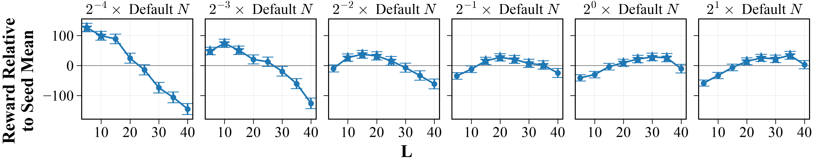
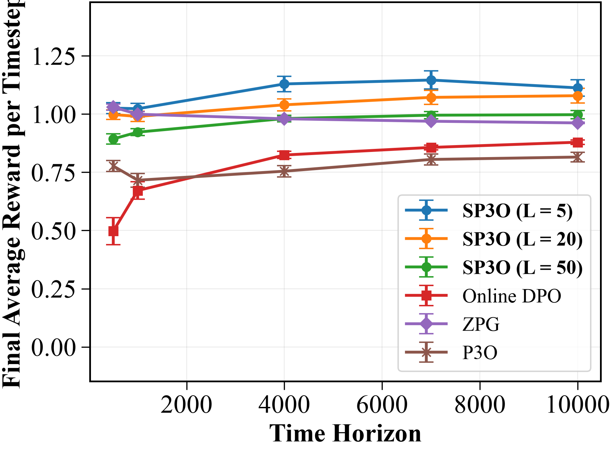

SP3O: Policy Gradients from Segment Preferences — No Reward Model, No Critic
Paper: "SP3O: Reinforcement Learning from Segment Preferences without Reward Modeling" (arXiv 2608.02951, submitted Aug 3 2026). Authors: Evan Assmus, Qining Zhang, Lei Ying (University of Michigan, per the thread).
TL;DR
- Preference-based RL forces an ugly choice: train a reward model (compounding errors, reward hacking surface) or go reward-model-free with methods that only really hold in bandits/deterministic MDPs (DPO, P3O) or use slow zeroth-order optimization. SP3O is reward-model-free, critic-free, and gradient-based in general stochastic MDPs.
- The enabling move is the feedback unit: evaluators compare short segments rather than full trajectories. Segment preferences feed an off-policy importance-sampling estimator of policy value differences, which plugs directly into a PPO-style clipped policy-gradient loss — with a theorem tying the segment-level gradient to the true objective's gradient up to a \(1/(1-\gamma^L)\) scaling.
- Theory predicts a segment-length tradeoff (short segments leak oracle noise, long segments blow up estimator variance) with optimal L growing with feedback budget — confirmed empirically. On MuJoCo, SP3O dominates Online DPO, P3O, and ZPG as horizons grow; on GPT-J detoxification it beats Online DPO and improves fastest at long continuation lengths.
Why this matters
Two chronic pains in RLHF-style training, addressed at once. First, the reward model: it's the standard bridge from preferences to policy gradients, and also the standard failure point — misspecification, distribution shift as the policy moves, and the entire reward-hacking attack surface exist because we insist on compressing preferences into a proxy scalar function before optimizing. Every reward-model-free method chips away at that, but the existing ones (DPO and its online variants, P3O) lean on structural assumptions — contextual bandits or deterministic dynamics — that a multi-step stochastic environment violates. Agentic settings are exactly multi-step and stochastic.
Second, the feedback unit. Trajectory-level comparison is what most PbRL assumes, and it scales terribly with horizon: asking an evaluator (human or LLM judge) to rank two 10,000-step trajectories — or two 100-turn agent sessions — produces slow, noisy, fatigued labels. Segments are short, local, and easy to judge. But segment preferences don't obviously identify a policy ordering; the paper's contribution is showing they do, with a consistent gradient estimator and a principled account of how long the segments should be.
For this tracker's interests, the horizon story is the important one: as tasks stretch into long-horizon agentic territory, both trajectory-level judging and trajectory-level credit assignment degrade. SP3O is a theory-first datapoint that localized preference feedback plus importance-sampling can replace both the reward model and the critic — and that the benefit grows with horizon.
The core idea
The preference oracle compares two length-L segments \(\sigma^1, \sigma^2\) under a Bradley-Terry-style model over segment values — the discounted rewards accumulated inside the segment plus a value estimate at the endpoint:
where \(R(\sigma)\) is the discounted partial return within the segment and \(\hat{Q}\) captures what happens after it. Inverting the logistic turns observed preference frequencies into estimates of value differences between the policies that generated the segments — no reward model is ever fit.
The theoretical anchor is a gradient-equivalence result: optimizing the segment-level objective recovers the true policy gradient up to a horizon-dependent constant,
where \(\mathcal{M}'\) is the segment-level construction and \(\pi'\) a comparison policy (Theorem 1; notation condensed — verify exact statement in the paper). So "make my segments preferred over the old policy's segments" is, up to scaling, "ascend the true return."
The estimator is made off-policy by importance sampling, and the resulting value-difference estimate \(D(\sigma^1,\sigma^2)\) is optimized with a PPO-type clipped surrogate over segment likelihood ratios:
a direct PPO analogue where the "advantage" is the preference-derived value difference between paired segments and the ratio is a product over the L steps of the segment. Critic-free: the baseline role is played by the comparison segment itself.
How it works
# SP3O core loop (condensed from the paper)
input: policy π_θ, reference π_ref, segment length L,
oracle budget N per update
for t = 1..T: # policy updates
roll out π_θ and comparison policy π_{θ_{t-1}}
chop trajectories into length-L segments
form N_p segment pairs (σ¹ from π_θ, σ² from π_{θ_{t-1}})
query preference oracle on each pair
# reward-model-free estimation:
D(σ¹,σ²) ← policy value-difference estimate from
preference frequencies (inverse-logistic),
importance-weighted for off-policyness
# critic-free, gradient-based update:
L_SP3O ← PPO-style clipped loss over segment
likelihood-ratio products, weighted by D
θ ← θ − η ∇θ L_SP3O
The segment-length dial. Proposition 1 bounds the estimation error as
with \(N\) the preference budget and \(\nu\) the oracle's noise level. The two terms pull in opposite directions: short segments keep per-pair variance low but the \(\gamma^{L-1}\nu\) term large (each label leaks more endpoint/oracle error into the estimate), while long segments suppress that leakage but pay \(\sqrt{L/N}\) in variance — longer ratio products, fewer effective pairs. The optimal L therefore increases with the feedback budget N: with few labels you want short, cheap, low-variance comparisons; with many labels you can afford longer segments that are individually more informative.

Figure 2 from the paper: reward (relative to seed mean) as a function of segment length L, for oracle budgets from 2⁻⁴× to 2¹× the default. At tiny budgets short segments win outright; as the budget grows the optimal L climbs — matching the theoretical tradeoff.Results
Robotic control. Gymnasium MuJoCo locomotion — Ant-v5, HalfCheetah-v5, Swimmer-v5 — with 100 policy updates, 10 trajectories per update, 100 seeds, against Online DPO, P3O, and ZPG (zeroth-order preference gradient).

Figure 1 from the paper (Ant-v5 panel): as the task horizon grows from ~500 to 10,000 steps, SP3O (L=5, 20, 50) holds or improves while baselines stall — at the longest horizon SP3O (L=5) sits around 1.11 reward/timestep vs ~0.88 for Online DPO and ~0.81 for P3O.The horizon sweep is the paper's money plot: SP3O and Online DPO improve as horizon grows, P3O stays flat, ZPG degrades — and SP3O sits on top at the longest horizons at every tested segment length, with the shortest segments (L=5) best overall in this budget regime. This is the regime where trajectory-level feedback is least informative per label, and segment-level feedback keeps its information density constant.
LLM fine-tuning. Detoxification of GPT-J 6B (LoRA rank 16) on RealToxicityPrompts, 2,000 training steps, 5 seeds, measured as toxicity vs. KL from the base model. SP3O consistently outperforms Online DPO on the toxicity–KL frontier and roughly matches P3O at the standard continuation length. The differentiator again is horizon: pushing continuation length from 64 to 256 tokens, SP3O reaches low toxicity markedly faster while DPO and P3O degrade — longer generations are exactly where segment preferences pay.
How it connects
- TRACE turn-level rewards (this list): same diagnosis, different mechanism. TRACE densifies credit by pricing individual turns with a learned value decomposition; SP3O densifies the feedback itself by collecting preferences over segments and converting them straight into gradients, skipping the learned scalar entirely. For long-horizon agent training these are the two ends of the design space: learn a decomposed proxy vs. restructure the label unit.
- RLSVR self-verifiable rewards (this list): both attack the reward-model bottleneck from opposite sides — RLSVR by making rewards checkable rather than learned, SP3O by making the preference data itself the gradient signal. Neither leaves a reward network to hack.
- HL-Gauss PPO (this list): orthogonal PPO-stack improvements. Notably SP3O deletes the critic that HL-Gauss-style value losses improve; whether a critic-free preference gradient can match a well-calibrated critic at scale is exactly the open comparison.
- The agentic-RL cluster (MOLT, EvoHarness-RL, this list): agent trajectories are long, stochastic, and painful to judge holistically. Segment-level preference feedback — "was this 5-turn stretch better than that one?" — is a natural fit for LLM-judge supervision of agent training, and SP3O's budget-vs-L analysis gives an actual rule for choosing the window.
Critical take
The LLM experiment is the weakest link for the claims this audience cares about: GPT-J 6B detox on RealToxicityPrompts is a 2022-vintage testbed, the preference oracle is presumably a toxicity scorer rather than a fatigued human (the paper's human-effort motivation is argued, not tested — no human-subject labeling study), and "beats Online DPO, ties P3O" at standard lengths is a modest margin. The robotics results are much more thorough (100 seeds is unusually honest), but MuJoCo locomotion with dense simulator-derived preferences is a friendly setting for importance sampling; segment likelihood-ratio products over L steps of a 100+-turn LLM agent rollout would face far harsher variance, and the paper's own bound scales as \(\sqrt{L}\) only under assumptions worth checking. The oracle model also quietly assumes segment preferences follow discounted-return-plus-endpoint-value logistic comparisons — real human segment judgments (myopia, salience effects) will violate this in ways the theory doesn't cover. And practically, per-update oracle queries on fresh segment pairs make this an online preference method; the label-efficiency comparison against offline DPO on a fixed dataset isn't the setting here. What survives all that: a rare theory-grounded bridge from localized preferences to unbiased-ish policy gradients with no reward model and no critic, and a segment-length prescription that practitioners of LLM-judge-supervised agent training could apply tomorrow.
If you remember three things
- Segment preferences → policy gradients, directly: an inverse-logistic, importance-weighted estimator of policy value differences feeds a PPO-style clipped loss — no reward model to hack, no critic to train, and validity in general stochastic MDPs where DPO/P3O assumptions break.
- Segment length is a budget-dependent dial: error ≈ \(\frac{1}{1-\gamma}\sqrt{L\log(2/\delta)/N} + \gamma^{L-1}\nu\), so optimal segments lengthen as your preference budget grows. With few labels, compare short windows.
- The advantage compounds with horizon: on MuJoCo at 10k-step horizons and on 256-token continuations, SP3O's margin over Online DPO/P3O grows — localized feedback is the scalable answer to judging long agentic rollouts.